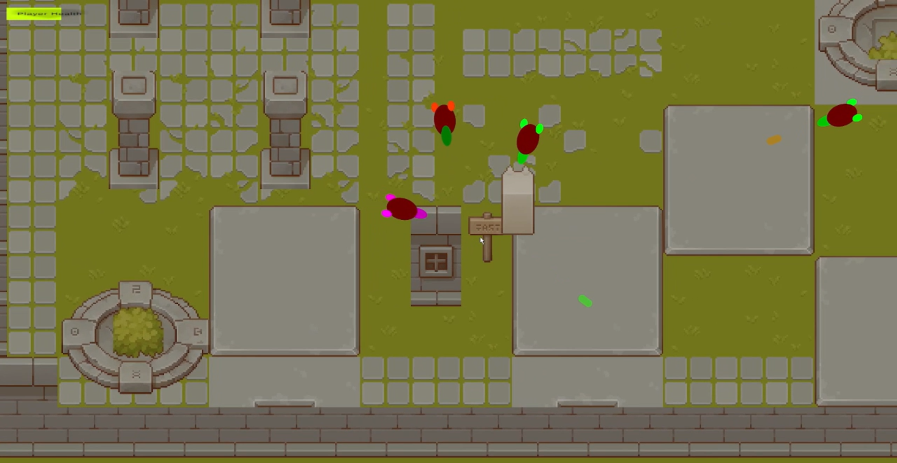
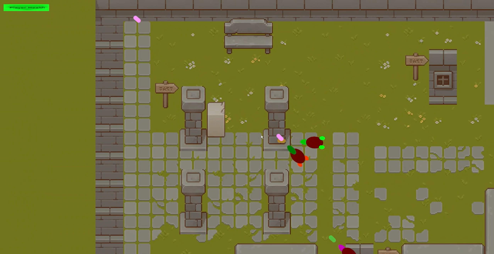
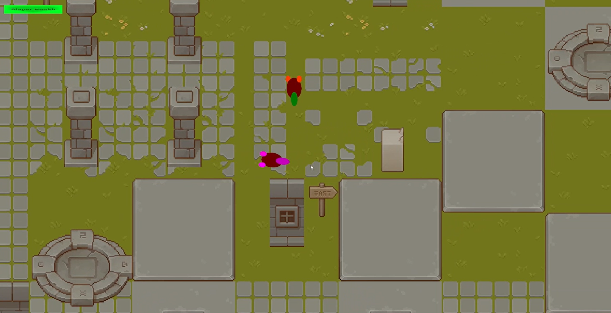

SpiderSquish
Dash to defeat. A top-down 2D Unity project built with OOP and modular systems.
Category: Game Projects | Role: Developer | GitHub
About the Game
SpiderSquish is a top-down 2D Unity game built for Object-Oriented Programming coursework. The player moves through a forest arena, avoids enemy attacks, collects power-ups, and defeats spiders using a dash attack.
Enemies use projectiles and different movement patterns to pressure the player. Spawners add variety and keep the player moving around the level.
The game includes health, score tracking, enemy damage, player feedback, and a clean core loop built around movement, timing, and survival.
My Contribution
I implemented player movement, dash mechanics, health management, enemy behaviour, projectile logic, spawning, collision handling, and score UI.
I structured the code using OOP principles so that gameplay systems stayed modular, readable, and easier to extend.
View Repo

